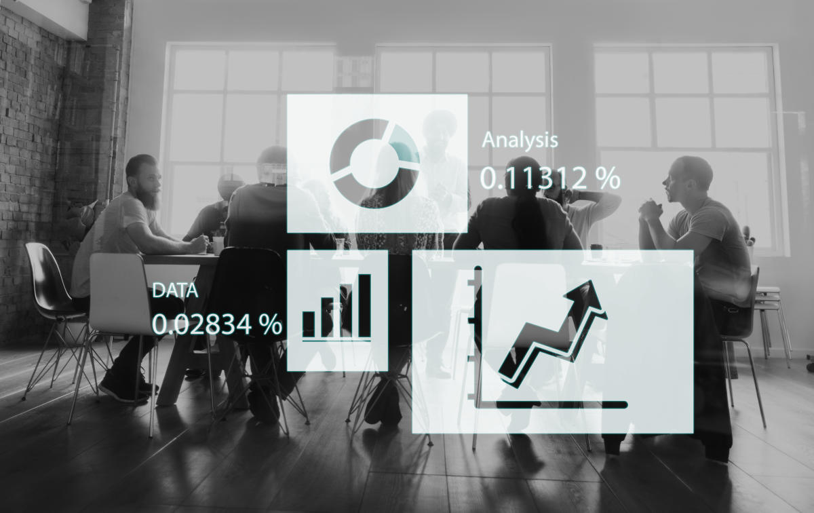

Há um problema silencioso em muitas PME portuguesas: têm demasiados números e poucas respostas. O gestor abre o ficheiro de Excel, vê 40 colunas, faz scroll até ao fim, fecha o ficheiro e toma a mesma decisão que tomaria sem ele. O problema não é falta de dados. É excesso de indicadores sem hierarquia.
Um KPI, por definição, é um Key Performance Indicator: um indicador chave de desempenho. A palavra "chave" é deliberada. Não é um indicador qualquer, não é um número que se pode calcular, não é uma métrica que alguém achou interessante. É um número que, quando muda, muda o que a empresa faz a seguir. Poucos gestores de PME pensam nos seus indicadores com esta exigência.
Este artigo é sobre como escolher esses indicadores, o que cada um mede de facto, e como organizar um sistema de acompanhamento que seja utilizável numa empresa com entre 5 e 250 pessoas.
A ilusão de controlo dos dashboards com 50 métricas
Existe uma tendência natural nos gestores que começam a trabalhar com dados: querem medir tudo. Receita, margem, tickets médios, tempo médio de resposta, NPS, custo por lead, taxa de abandono, produtividade por colaborador, rotação de stocks, dias de crédito concedido. Cada um destes números tem valor informativo. Mas agrupados num painel sem prioridade, transformam-se em ruído.
O problema prático é simples: se tudo é prioritário, nada é prioritário. Quando um gestor de PME tem de decidir entre renegociar prazos com fornecedores ou investir em mais um comercial, o que precisa não é de 50 métricas. Precisa de 3 ou 4 números que lhe digam com clareza qual é o estado atual da empresa e qual das duas opções resolve o problema mais urgente.
A outra falha comum é confundir métricas de vaidade com KPIs reais. Número de seguidores nas redes sociais, visitas ao website, presença em feiras setoriais: são dados, podem ser úteis para acompanhar em certos contextos, mas raramente justificam uma decisão de gestão. Um KPI genuíno tem consequência direta na saúde do negócio. Quando sobe ou desce de forma relevante, o gestor deve agir.
Os KPIs financeiros que nenhuma PME pode ignorar
A saúde financeira de uma empresa comunica-se através de um conjunto restrito de indicadores. Uma PME que os acompanhe regularmente tem uma vantagem operacional enorme face a quem navega apenas por intuição. Não se trata de sofisticação financeira, trata-se de higiene básica de gestão.
Fundo de maneio
O fundo de maneio é a diferença entre o ativo circulante (o que a empresa tem ou vai receber a curto prazo) e o passivo circulante (o que a empresa deve pagar a curto prazo). É o indicador mais imediato de capacidade de sobrevivência a 90 dias.
Uma empresa pode ser lucrativa no papel e falir por falta de fundo de maneio. Acontece com mais frequência do que parece, especialmente em PME com prazos de recebimento longos e prazos de pagamento curtos. O gestor que acompanha este número semanalmente consegue antecipar tensões de tesouraria com tempo suficiente para agir.
Margem bruta
A margem bruta mede a diferença entre a receita e os custos diretos de produção ou prestação do serviço. Expressa em percentagem, diz quanto cada euro de receita contribui para cobrir os custos fixos e gerar lucro. Uma empresa com margem bruta de 35% tem 35 cêntimos por cada euro vendido para pagar salários, rendas, marketing e tudo o resto.
O valor absoluto da margem importa menos do que a sua evolução. Uma margem bruta que cai trimestre após trimestre é um sinal de problema estrutural, seja na política de preços, seja no custo das matérias-primas ou dos serviços externos contratados. Em sectores como o retalho, margens de 20-30% são normais. Em serviços profissionais, margens abaixo de 50% merecem atenção.
EBITDA e EBITDA margin
O EBITDA (Earnings Before Interest, Taxes, Depreciation and Amortization) é o resultado operacional antes de juros, impostos, amortizações e depreciações. É, na prática, o indicador que melhor representa a capacidade da empresa de gerar caixa a partir da sua operação, sem interferência da estrutura de capital ou das opções contabilísticas.
Para uma PME, o EBITDA é particularmente útil por dois motivos. Primeiro, é a métrica que qualquer banco ou investidor irá calcular ao analisar a empresa, por isso o gestor deve conhecê-la antes de entrar em qualquer negociação financeira. Segundo, permite comparar a performance operacional ao longo do tempo sem que as variações de endividamento ou de política de amortizações distorçam a leitura.
Prazo médio de recebimento e de pagamento
O prazo médio de recebimento (DSO, Days Sales Outstanding) diz quantos dias a empresa demora, em média, a receber após a fatura. O prazo médio de pagamento diz quantos dias a empresa tem para pagar os seus fornecedores. A diferença entre os dois determina o ciclo de tesouraria: quanto maior o gap entre o que se recebe tarde e o que se paga cedo, maior o esforço financeiro da empresa.
Numa empresa com 10 milhões de euros de faturação anual, reduzir o prazo médio de recebimento de 75 para 55 dias liberta cerca de 550 mil euros de liquidez. Sem qualquer financiamento externo, sem qualquer crescimento de receita. Só através de gestão de crédito mais rigorosa. Poucos indicadores têm impacto tão direto e imediato na tesouraria.
Cash flow operacional
O resultado líquido e o cash flow operacional são duas métricas diferentes que frequentemente divergem. Uma empresa pode apresentar lucros contabilísticos enquanto o saldo de caixa cai mês após mês, porque os lucros ainda estão presos em faturas por receber ou em stocks. O cash flow operacional mede o dinheiro real que entra e sai da operação, sem ajustes contabilísticos.
Para um gestor de PME, este número deve ser acompanhado mensalmente. Um cash flow operacional negativo durante dois ou três meses consecutivos é um sinal de alerta, mesmo que os resultados do período pareçam positivos.
O que medir na frente comercial
Os KPIs comerciais variam bastante consoante o modelo de negócio. Uma empresa de serviços por projeto tem dinâmicas completamente diferentes de uma empresa de software com receita recorrente. O erro mais comum é importar métricas de modelos de negócio diferentes, o que leva a indicadores que medem a coisa errada.
Receita recorrente vs. receita transacional
Para qualquer empresa, a distinção entre receita recorrente (que se renova automaticamente ou por contrato) e receita transacional (que depende de nova venda) é fundamental. A receita recorrente tem valor previsional; a transacional, não. Uma empresa de consultoria que fatura 2 milhões por ano mas com 90% de receita por projeto tem um negócio estruturalmente diferente de uma que fatura o mesmo valor com 60% em contratos anuais de retenção.
Para empresas com componente de subscrição ou contrato, o Monthly Recurring Revenue (MRR) ou o Annual Recurring Revenue (ARR) são os indicadores de topo. Para empresas com modelo transacional, a atenção deve estar no número de clientes ativos por período e no ticket médio.
Taxa de conversão por etapa do funil
A taxa de conversão global diz pouco. Saber que 5% dos leads se tornam clientes não permite tomar nenhuma decisão específica. O que vale é perceber onde o funil perde mais. Se de 100 leads qualificados, 60 chegam a uma proposta mas só 15 chegam a negociação e apenas 5 fecham, o problema está na fase de negociação, não na geração de leads. Cada etapa merece o seu próprio indicador.
Custo de aquisição de cliente e Lifetime Value
O CAC (Customer Acquisition Cost) mede quanto a empresa gasta, em média, para adquirir um novo cliente. Inclui todos os custos de marketing e vendas divididos pelo número de clientes adquiridos no período. O LTV (Lifetime Value) mede o valor total que um cliente gera ao longo de toda a relação com a empresa.
A relação entre LTV e CAC é provavelmente o indicador de sustentabilidade comercial mais importante. Uma PME deve ter um LTV pelo menos 3 vezes superior ao CAC para que a aquisição de clientes faça sentido económico. Se o rácio for inferior a 2:1, a empresa está a crescer a um custo insustentável.
Churn rate
Para empresas com receita recorrente, o churn (taxa de cancelamento ou não renovação) é o indicador mais crítico. Um churn mensal de 3% pode parecer baixo, mas implica a perda de mais de um terço da base de clientes por ano. Uma empresa que cresce 25% em novos clientes mas tem 30% de churn está, na prática, a encolher.
Mesmo para empresas sem modelo de subscrição, vale a pena acompanhar a taxa de repetição de compra ou o período médio entre compras. A perda silenciosa de clientes que simplesmente deixam de comprar é, em muitas PME, a principal razão pela qual o crescimento estagna apesar de bons resultados comerciais a curto prazo.
KPIs operacionais: o que medir além das finanças
Os KPIs operacionais variam muito por setor, mas existem dois princípios transversais. Primeiro: só vale a pena medir o que a empresa consegue influenciar diretamente. Segundo: um KPI operacional deve estar sempre ligado a um resultado financeiro, caso contrário é apenas uma métrica de atividade sem consequência.
Produtividade por colaborador
A receita por colaborador é um indicador simples e revelador. Divide a receita total pelo número de colaboradores equivalentes a tempo inteiro. Numa empresa de serviços profissionais com 20 pessoas e 2 milhões de euros de faturação, a receita por colaborador é de 100 mil euros. Em empresas comparáveis do mesmo setor, esse valor pode ser 80 ou 140 mil euros, o que coloca a empresa numa posição relativa de eficiência ou ineficiência.
Para empresas com operações mais complexas, vale segmentar: receita por colaborador comercial, output por colaborador de produção, tickets resolvidos por agente de suporte. A granularidade certa depende do setor.
Prazo de entrega e taxa de cumprimento
Para empresas que entregam produtos ou projetos, o prazo médio de entrega e a percentagem de entregas dentro do prazo são indicadores com impacto direto na satisfação do cliente e, por consequência, no churn e no LTV. Uma empresa com 85% de cumprimento de prazos está a criar insatisfação ativa em 15% das suas entregas, o que tem custo comercial real, mesmo que não apareça imediatamente nas demonstrações financeiras.
NPS como proxy de saúde relacional
O Net Promoter Score mede a propensão dos clientes para recomendar a empresa. Não é uma métrica financeira direta, mas existe correlação entre NPS alto e menor churn, maior LTV e crescimento mais orgânico. Para uma PME, um NPS acima de 40 é um sinal positivo. Abaixo de 20, especialmente combinado com churn elevado, é um problema estrutural de experiência de cliente que nenhum investimento em marketing consegue compensar a longo prazo.
Quantos KPIs são suficientes e como organizá-los
A resposta prática é entre 5 e 10 indicadores no dashboard principal. Não é um número arbitrário: é o máximo que um gestor consegue ter presente simultaneamente sem entrar em paralisia analítica. Estes 10 devem cobrir as três dimensões críticas de qualquer empresa: saúde financeira, performance comercial e eficiência operacional.
Uma forma útil de organizar é a estrutura de "dashboard por camada". No topo, 3 a 4 KPIs de saúde global que o CEO ou CFO vê semanalmente. Numa segunda camada, 6 a 8 KPIs de detalhe que cada responsável de área acompanha mensalmente. Na terceira camada, métricas operacionais específicas que cada equipa monitoriza diariamente ou em tempo real.
| Camada | Quem usa | Frequência | Exemplos |
|---|---|---|---|
| Estratégica | CEO / CFO | Semanal | Fundo de maneio, EBITDA, MRR, Churn |
| Tática | Diretores de área | Mensal | CAC, LTV, Margem bruta por produto, DSO |
| Operacional | Equipas | Diária / Semanal | Leads gerados, tickets resolvidos, entregas no prazo |
Cadência de revisão
Um KPI sem cadência de revisão é inútil. O que funciona na maioria das PME é uma reunião semanal de 30 minutos focada nos 4 ou 5 indicadores de topo, uma revisão mensal mais aprofundada com toda a liderança, e uma revisão trimestral onde se avalia se os próprios indicadores ainda fazem sentido para a fase da empresa.
Esta última é frequentemente ignorada. Uma empresa em fase de arranque precisa de medir coisas diferentes de uma empresa em fase de escala, que por sua vez mede coisas diferentes de uma empresa em fase de maturidade. Os KPIs não são estáticos: devem evoluir com a estratégia.
O erro da meta sem contexto
Definir uma meta para cada KPI é importante, mas a meta isolada pode ser enganosa. Uma margem bruta de 42% é boa ou má? Depende do setor, do modelo de negócio e do momento da empresa. O que importa é a tendência (está a subir ou a descer?) e a comparação com o período equivalente do ano anterior.
Uma ferramenta simples que funciona em PME de qualquer tamanho é o semáforo: verde quando o indicador está acima do objetivo, amarelo quando está dentro de uma banda de tolerância, vermelho quando está abaixo. Não é sofisticado. Mas numa reunião de 30 minutos, permite ao gestor identificar em segundos onde tem de concentrar a atenção.
O que corre mal na maioria das PME
O erro mais comum não é escolher os KPIs errados. É nunca conseguir calculá-los de forma fiável. Uma empresa que mede o cash flow operacional mas cujos dados financeiros são atualizados trimestralmente pelo contabilista externo não consegue agir sobre esse indicador a tempo. Os KPIs só têm valor se a informação que os alimenta for atual e fiável.
O segundo erro é acompanhar indicadores sem os ligar a decisões. Saber que o DSO subiu de 60 para 75 dias não chega. A questão é: o que muda no processo de cobrança, na política de crédito ou na negociação com clientes por causa disto? Um KPI que não gera perguntas e ações é apenas um número decorativo.
O terceiro erro é a confusão entre KPIs e objetivos. "Crescer 20%" não é um KPI, é um objetivo. O KPI é a taxa de crescimento de receita, que se mede mensalmente e que pode apontar se o objetivo está ou não ao alcance. A distinção importa porque objetivos são anuais, KPIs são contínuos.
Como aplicar este conhecimento
Numa PME em fase de crescimento, o ponto de partida mais eficaz não é escolher 10 KPIs. É escolher um ou dois por área e garantir que são medidos com consistência durante 3 meses. Só depois de ter essa base é que faz sentido expandir o sistema.
A nossa experiência com empresas entre 500 mil e 10 milhões de euros de faturação mostra um padrão consistente: as que tomam melhores decisões de financiamento, de contratação e de expansão são invariavelmente aquelas que conhecem bem 5 ou 6 números do negócio. Não porque tenham mais informação, mas porque têm informação que confiam.
Para uma PME que está a estruturar este processo pela primeira vez, sugerimos começar pelos 5 indicadores financeiros descritos neste artigo. Garanta que são calculados mensalmente, com dados atualizados, e que existem 30 minutos por semana dedicados a discuti-los. Este investimento mínimo de tempo transforma a forma como a equipa de liderança toma decisões, sem qualquer software especializado ou consultor externo.
Se já tem esses 5 estabilizados, o passo seguinte é acrescentar 2 ou 3 KPIs comerciais alinhados com a estratégia de crescimento do momento. Uma empresa a tentar aumentar a base de clientes deve focar-se em CAC e taxa de conversão. Uma empresa a tentar aumentar rentabilidade deve focar-se em LTV e margem por segmento. A escolha dos indicadores deve seguir a estratégia, não o contrário.
Comentários, correções ou contrapontos são bem-vindos: geral@opencapital.pt